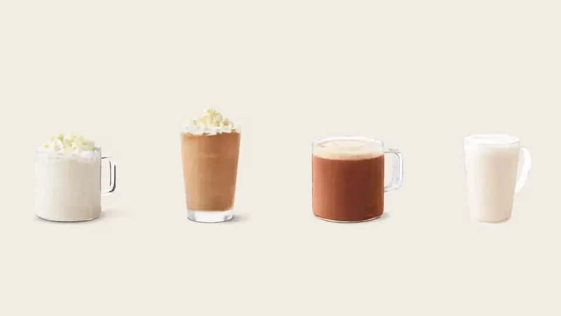

Unofficial fan guide - not affiliated with Tim Hortons
Every Canadian winter launch from 2025 and 2026 with official dates, how winter differs from the holiday menu, and what to expect after the 2026 holidays.
Full Menu / Blog / Tim Hortons Winter Menu

The Tim Hortons winter menu runs from early January to late February, after the holiday menu ends. In Canada it opens with a new flavoured-drink lineup and a returning bakery favourite. In 2026 that was the Chocolate Pistachio drinks and the Oatmeal Raisin Cookie, on January 8. The 2027 menu hasn't been announced.
The Canadian winter menu launches in the first two weeks of January. Tim Hortons announced its winter drinks on January 13 in 2025 and on January 8 in 2026. It adds a second wave of food in late January.
Winter has no official end date. In practice, the season closes when Roll Up To Win starts in late February. The contest ran from February 24 in 2025 and from February 23 in 2026. The spring food and drink launches follow in March and April. Most winter items are limited-time, so they can sell out at some restaurants before then.
The holiday menu runs from November to late December and is built around festive flavours. The winter menu starts in January with fresh flavours that have nothing to do with Christmas, plus value deals for the new year.
The holiday lineup, such as 2025's Biscoff drinks and baked goods, usually stays until late December or while supplies last. In January, Tims switches to new flavours. Two years in a row, those have been pistachio drinks. Our holiday menu guide covers the November-December lineup and when it launches.
The 2026 Canadian winter menu brought five Chocolate Pistachio drinks, the return of the Oatmeal Raisin Cookie and two new tarts. It also included a $3 breakfast deal, the Special Olympics Donut and the start of Roll Up To Win.
On January 8, 2026, Tim Hortons launched five Chocolate Pistachio drinks across Canada:
Matthew Feaver, Tim Hortons' Head of Innovation, said the two flavours "pair together perfectly". It joined the Brown Sugar Protein Iced Latte, which Tims promoted with its 2025 holiday menu.
The Oatmeal Raisin Cookie returned on January 8, 2026, as a nostalgic favourite. Our cookies menu lists the cookies sold year-round. On January 28, Tims added two new tarts. The Custard Tart has a creamy custard filling in a flaky pastry shell. The Pecan Butter Tart is a classic Canadian butter tart topped with candied pecans. Both followed the Salted Caramel Butter Tart from the year before. From January 30 to February 1, Tims sold the Special Olympics Donut, a chocolate cake ring with white fondant, coloured sprinkles and whipped topping. All proceeds went to Special Olympics Canada, in the seventh year of the partnership.
The January 2026 deal was a Classic Breakfast Sandwich or Classic Breakfast Wrap for $3 with any size of hot or cold coffee or tea, for a limited time. Tims also launched Tim Hortons Hockey Club merchandise in January. On February 2, it added a "Share the Love" Valentine's collection of mugs and colour-changing cold cups. Roll Up To Win ran from February 23 to March 22, its 40th year. Our Roll Up the Rim guide has the full history and the 2027 outlook.
In February 2026, Tim Hortons said it was rolling out a fluffier English muffin. It would reach western Canada first and every restaurant by the end of the quarter. President Axel Schwan said the aim was to make it "even fluffier and even more enjoyable to eat". That change affects the breakfast menu all year, not just in winter.
The 2025 Canadian winter menu centred on four White Chocolate Pistachio drinks. It also brought back the Blueberry Fritter and the Lemon Cake Donut and launched the TimSelects value menu.
On January 13, 2025, Tims launched the White Chocolate Pistachio Latte, Iced Latte, Iced Capp and Hot Chocolate. The latte was finished with Belgian white chocolate curls. Carolina Berti, Vice President of Category and Innovation, said pistachio added "a deliciously fun and refined twist" to white chocolate. These drinks were still on the Canadian menu we track in October 2026. A small White Chocolate Pistachio Hot Chocolate costs $2.99.
The same January 2025 release brought back two retro donuts. The Blueberry Fritter returned for a limited time, and the Lemon Cake Donut followed on January 15. The Caramel Toffee Cold Brew with espresso-infused foam also came back. The Blueberry Fritter keeps returning because fans keep asking for it. Our discontinued items list covers its history.
Early January 2025 also brought TimSelects, an everyday value menu with items from $2.99. It featured the new Spinach & Feta Savoury Egg Pastry at $3.99. The other items were the Everything Bagel with cream cheese, Four-Cheese Omelette Bites and the Red Pepper & Swiss Savoury Pinwheel.
January has followed the same pattern two years running: new flavoured drinks in the second week, a bakery item in late January, then Roll Up To Win in late February. This table lines up both Canadian winters.
| Timing | Winter 2025 (Canada) | Winter 2026 (Canada) |
|---|---|---|
| Early January | TimSelects value menu; Spinach & Feta Savoury Egg Pastry | $3 Classic Breakfast Sandwich or Wrap with a drink |
| Second week of January | White Chocolate Pistachio drinks (Jan 13) | Chocolate Pistachio drinks (Jan 8) |
| Returning bakery item | Blueberry Fritter; Lemon Cake Donut (Jan 15) | Oatmeal Raisin Cookie (Jan 8) |
| Late January | n/a | Custard Tart and Pecan Butter Tart (Jan 28); Special Olympics Donut (Jan 30-Feb 1) |
| Early February | n/a | "Share the Love" Valentine's merchandise (Feb 2) |
| Late February | Roll Up To Win (Feb 24-Mar 23) | Roll Up To Win (Feb 23-Mar 22) |
The "n/a" cells mean we found no Canadian announcement for that window, not that nothing launched. Tims sometimes adds items without a national press release.
Expect a new flavoured drink lineup in the first half of January 2027, a returning bakery favourite, a late-January bakery launch and Roll Up To Win in late February. This forecast is based on the 2025 and 2026 menus, not on an announcement.
Pistachio led both of the last two winters, so a third pistachio lineup or a new nut or chocolate flavour is likely. Protein drinks are a growing category for Tims, with the Protein Quenchers launching in spring 2026, so a protein option will probably appear again. The Special Olympics Donut has run for seven straight years and should return around the end of January. The Blueberry Fritter is the most-requested retro donut, which makes it a strong candidate for a comeback. We'll update this page when Tim Hortons announces the 2027 winter menu.
The U.S. winter menu has its own items and deals, and they often differ from Canada's. In January 2026, U.S. restaurants got Chocolate Pistachio Lattes, Egg White Wraps and a 1, 2, 3 Menu. On January 28 they added a full line of Protein Lattes (Classic, Vanilla, Caramel, Mocha and Sugar-Free Vanilla, hot and iced). Canada has had only individual protein iced lattes.
The 1, 2, 3 Menu let U.S. guests buy any drink at the regular price and add a Classic or Specialty Donut for $1, a bagel with cream cheese for $2 or an eligible breakfast sandwich for $3. The January 28 launch also brought the Raspberry Chocolate Donut and the ValenTIMS Day Timbit. In January 2025, the U.S. menu had the Chocolate Covered Strawberry Iced Capp and Lattes, a Coconut Cream Donut, a Blueberry Sour Cream Donut, a Dream Cookie made with Snickers and Loaded Hashbrown Omelette Bites. That month, members also got triple points and a free medium coffee every Monday with any purchase. Our guide to Tim Hortons in the U.S. explains where the chain operates.
The best everyday winter drinks at Tims are the hot chocolate, the French Vanilla, the London Fog and steeped tea. All four are on the menu year-round, so they're there once the seasonal drinks sell out.
For a ranked list across the whole menu, see our best Tim Hortons drinks. If you'd rather brew at home on cold mornings, our guide to Tim Hortons coffee beans shows which bag to buy. Prices are this site's Canadian reference prices, last checked in late September 2026.
Yes. Tim Hortons doesn't always use the name "winter menu" in Canada, but every January it launches a new set of limited-time drinks and baked goods. In the U.S., Tims has used the name "Winter Menu" in its January announcements.
In January 2026 it was the Chocolate Pistachio lineup: a Latte, Cappuccino, Cold Brew, Iced Capp and Protein Iced Latte. The January 2027 drinks haven't been announced yet.
Usually not for long. The holiday lineup is limited-time and typically lasts until late December or while supplies last. Some restaurants may still have holiday stock in the first days of January.
Yes, several times. Its most recent confirmed national return was in January 2025, when Tims brought it back for a limited time alongside the Lemon Cake Donut. It isn't on the permanent menu.
Not every year. In 2026, Tims marked Valentine's Day with "Share the Love" merchandise from February 2 and its new tarts, not with a themed donut. In 2019, it sold a heart-shaped "Be Mine" Boston Cream donut and Red Velvet drinks.
It starts in late February. The 2026 contest ran from February 23 to March 22, and the 2025 contest from February 24 to March 23. The 2027 dates haven't been announced.
Most national launches are available at participating restaurants across Canada, including Quebec. Participation varies by restaurant, so check the Tims app for your location before you go.
Yes. The Custard Tart, Pecan Butter Tart and Oatmeal Raisin Cookie contain no meat, and the 2025 Spinach & Feta Savoury Egg Pastry was a meat-free breakfast option. Check the Tim Hortons allergen guide if you avoid eggs or dairy.
It is a chocolate cake ring donut with white fondant, coloured sprinkles and whipped topping. Tims sells it for a few days in late January or early February. In 2026 it was sold from January 30 to February 1, and all proceeds went to Special Olympics Canada.
The spring menu starts in late March or early April, after Roll Up To Win. In 2026, Ryan's Signature Donut launched on March 24, and the spring cold drinks, including the Protein Quenchers, arrived on April 2. See our new menu items tracker for each launch date.
Tim Hortons hasn't said. The White Chocolate Pistachio drinks from January 2025 stayed on the Canadian menu, so pistachio drinks have lasted longer than a typical limited-time flavour. Check the app in January 2027.
This is an independent, unofficial guide. It is not affiliated with, endorsed by, or sponsored by Tim Hortons or Restaurant Brands International. Launch dates, item names and quotes come from Tim Hortons' Canadian press releases (January 13, 2025; January 8, January 28 and January 30, 2026), Global News (February 2026) and Tim Hortons U.S. releases on PR Newswire. The 2027 section is our forecast from those two years, not an announcement. Drink prices are this site's Canadian reference figures. See Sources.